Cambodia Index: - 1 - 2 - 3 - 4 - 5 - 6 - 7 - 8 - 9 - 10 - 11 - 12
We spent the first night in Phnom Penh, then headed out for 5 days in "the province" (which was a way of saying, "the country.") We went to a province & city, both called Kampong Cham. The people we met there were truly amazing.
On this page you'll see our trip to the province, some excitement we
had along the drive, our experiences giving out handbills in the city
center, and visiting the sites of the upcoming Leadership
Conference & Festival.
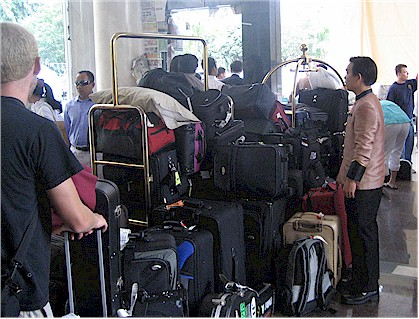
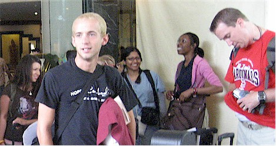
Jonathan, excited to get started on the trip.
(With the exception of the 3 bags that remained in Los Angeles!)
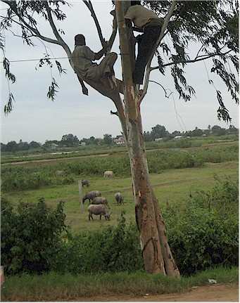
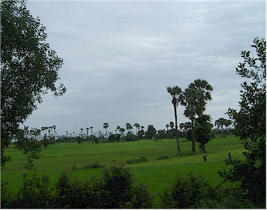
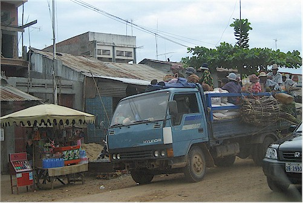
The cities were not so beautiful, but interesting.
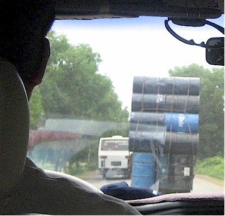
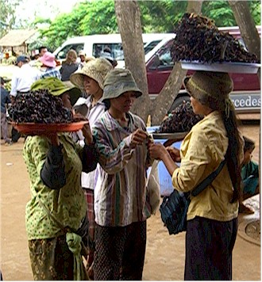
in Cambodia.
ourselves to use the facilities. These girls are selling fried tarantulas.
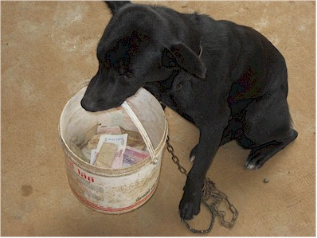
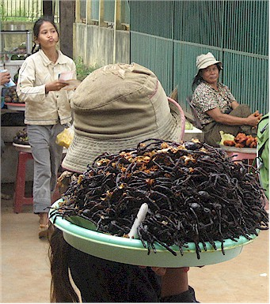
ex-soldier beating him for putting the bucket down. It was so sad.
There were so many! That's what freaked me out - they must be everywhere.
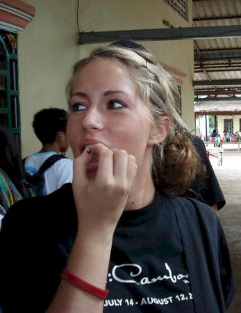
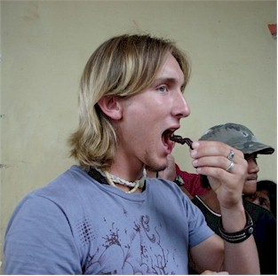
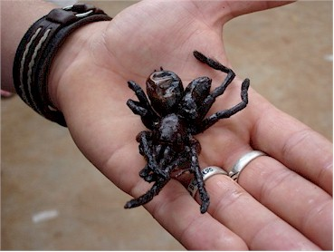
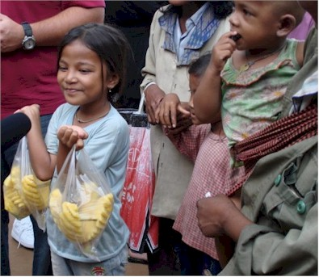
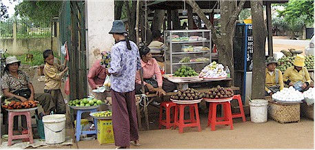
Fruit stand at the rest area.
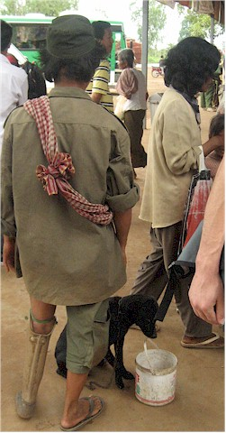
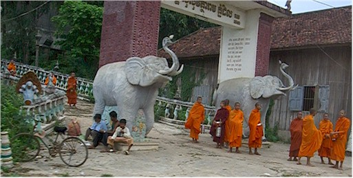
Gretchen snapped this shot with almost no warning as we
drove down the road.
I thought it turned out great.
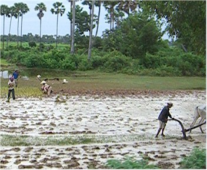
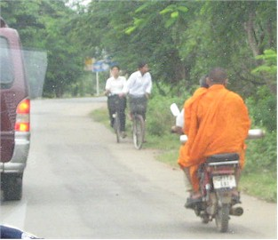
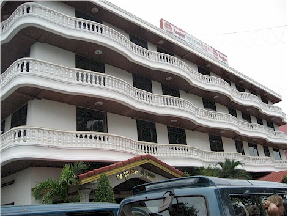
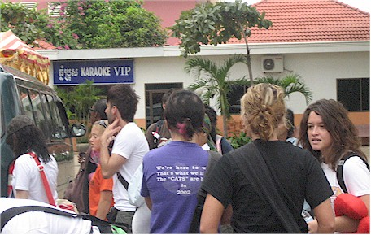
We were issued two rolls of toilet paper per room and given
a few
bottles of water, then we went to throw our stuff in our rooms.
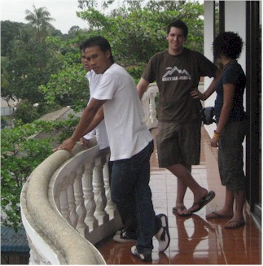
Checking out the view from the balcony.
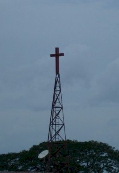
This could be seen out one of the hotel windows - cool!!

The shower head is attached to the white tubing directly above
the toilet. You had to move the T.P. far away before showering.
Many people had hot water there, but Eric and I were not among them.


It's the same kind of spray nozzle that's on the kitchen
sink of half the homes in America. Icky!
room key, so you could not leave the A/C on when you were away.
This room had a master power switch which could be left on, so
that was nice. The room key was a large, old-fashioned metal key.


toilet paper into all the holes in the room. Maybe that's why we didn't receive any of
those unwanted visitors. Above you can see the pink T.P. in a large hole right beside the head of the bed.
nice slippers for your use around the hotel. Not to
be outdone, our hotel in the country offered a similar service.


that we found upon first entering the restroom. An
unpackaged toothbrush and a dirty scrub brush.
intended for use on your shoes. I kept putting it
in the floor and the maid kept putting it back on
the tray above the sink.
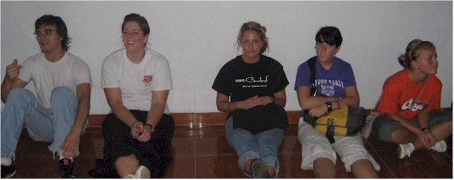
The first of MANY hallway meetings we had in the hotel.
Lunch was "grab some of your snacks" and we hit the road almost immediately.
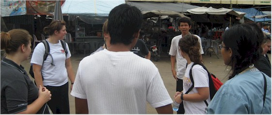
Our first official duty - handing out handbills to
advertise the upcoming festival.
Here we are getting our instructions.
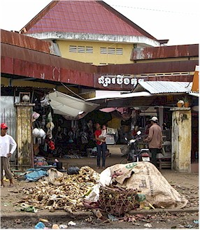
started, and apparently the spot for
dumping trash as well.
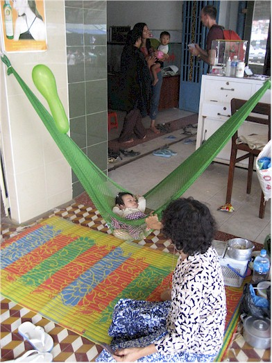
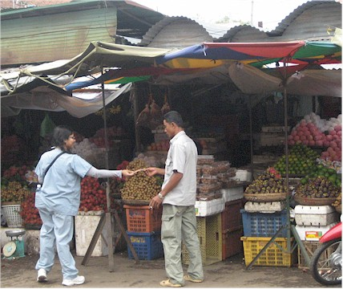
Here Suja gives a handbill to a fruit seller.
Eric is in the background giving out a handbill.
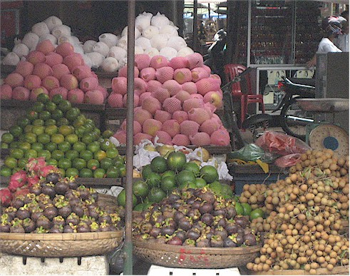
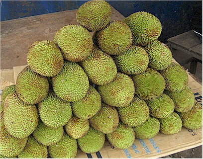
Just some of the many bizarre fruits they had there.
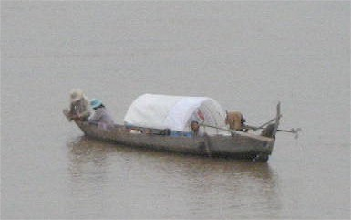
People in their boat on the Mekong river.
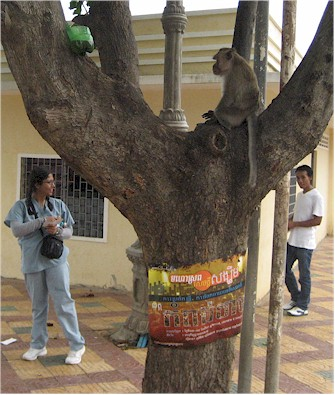
where this one-eyed monkey lived. It was strange.
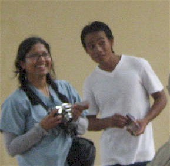
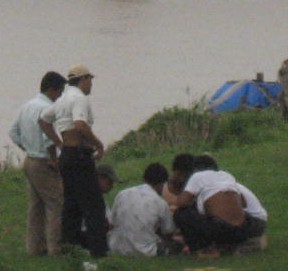
he looked a little agressive!
in the middle of the day on a Thursday. Also, it was
hot but no one wears shorts.
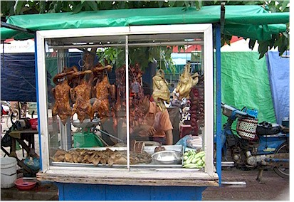
Gretchen took this shot of some
of the food options available to us.
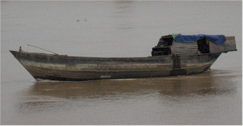
Another boat we saw on the Mekong.
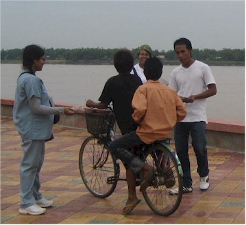
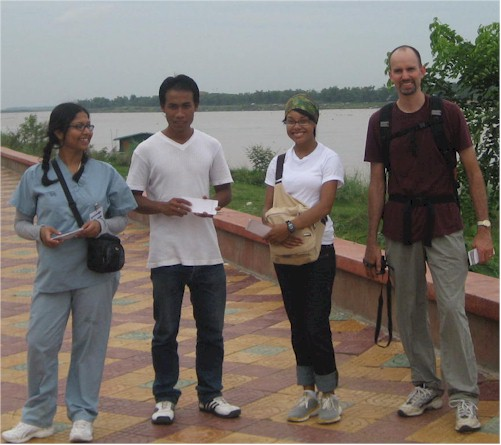
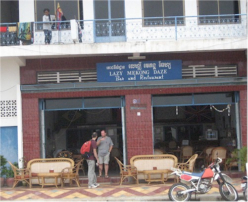
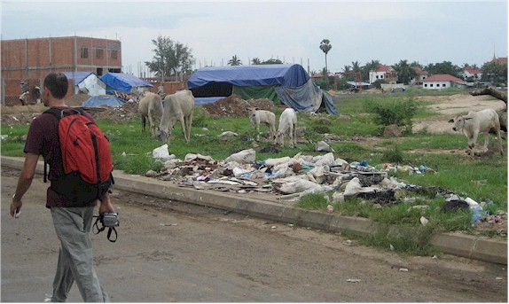
This was right in the city center - trash and cows and random empty lots. It was strange.
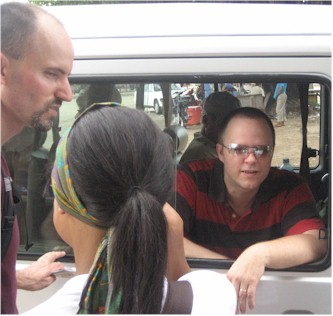
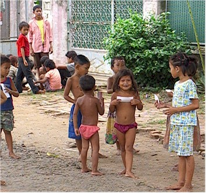
know what they were. White people were such an oddity that
we were treated like a celebrity everywhere we went.
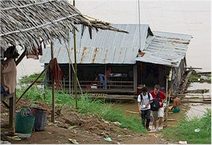
giving out handbills. We tried to leave no
home ignored!
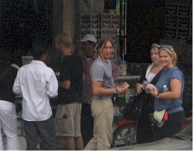
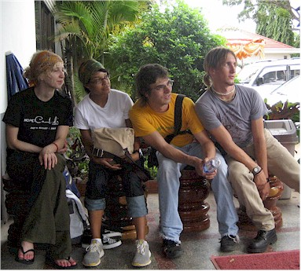
Leadership Conference and the 3-night Festival we'll be putting on.
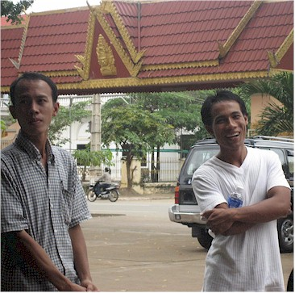
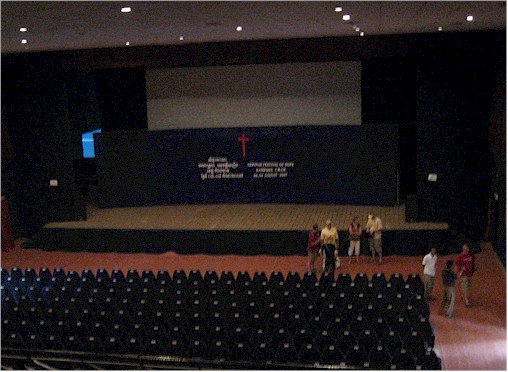
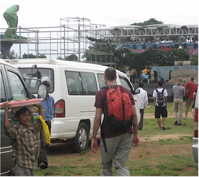
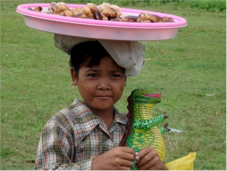
It was really just a soccer field that the local volunteers and people
Harvest hired had converted into a concert area - it was great!
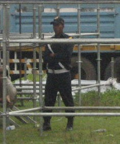
I don't think I would have bothered them.
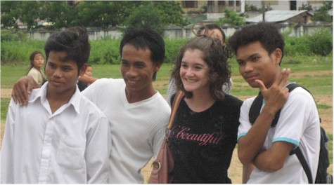
Chom, Lin, Sarah, and Sam
While we were doing these things, another team was painting
one of
the orphanages. Church of the Harvest raised funds to build 3 and
Joyce Meyer Ministries will pay to staff & run them for 20 years.
Great deal!
thankful for Andrew, who had the sense to bring duct tape & a leatherman.
it was NOT secure! Josiah is still having flashbacks.
their new home was being prepared for them.
food tasted like fairly typical Chinese food from back home. However, we were
not quite as thrilled when we continued to eat almost exactly the same meal for
lunch and dinner for the next 5 days. But at least it tasted good, right?!!
dish in front of her - the chicken curry.
Also that's soy milk beside the bowl,
in case that's your beverage of choice
with dinner.

Here our worship team practices in the room late in the evening.


It was strange and inconvenient, but worth it. Malaria is no fun!
Cambodia Index: 1 - 2 - 3 - 4 - 5 - 6 - 7 - 8 - 9 - 10 - 11 - 12